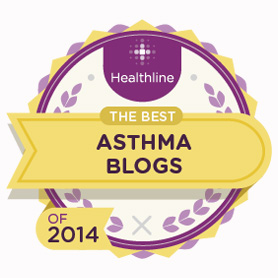

Best Of Cancer Blogs
We’ve made a lot of progress in detection and treatment for many types of cancer, but it still can be a frightening diagnosis. One of the most important things you can do is find reputable sources to understand all you can about cancer. Another way to cope is to connect with others who’ve been there.CTCA
The Cancer Treatment Centers of America (CTCA) provides state-of-the-art, patient-centered treatment. The site is packed with practical information about diet and lifestyle, tips for caregivers, quality of life issues, and so much more.
With that in mind, the CTCA Blog delves into the issues that concern patients here and now. Find out what the latest studies mean and what complementary therapies may be helpful.
I had Cancer
As soon as you spot a blog post titled, “5 Ways to Avoid Cancer Metastasizing to Your Wallet,” you know you’re looking at a no-holds-barred blog. I Had Cancer is a member-driven site complete with forum discussions that encourage give and take. Here, cancer patients feel no need to sugarcoat their experiences, so you get a dose of each person’s reality.
If you’re feeling disconnected and misunderstood, I Had Cancer may help you shake it off. You just might find someone here who knows exactly what you’re talking about, and perhaps you can help each other out.
.
Best Of Asthma Blogs

Lorraine, age 35 – I’m fitter and I’ve lost weight
I started smoking when I was 16 years old. I eventually smoked 2030 cigarettes a day.
I definitely noticed a difference...
...with my asthma when I stopped I was able to go for a run (short distances) with my dog and I
had a personal trainer three times a week to lose weight, which I would never have been able to do
before. I'm also glad I quit because now my clothes are fresh and clean, my car doesn't smell, and I
have more money in the bank!
How I did it
I stopped with the help of stop smoking classes over five years ago, along with tablets and
willpower. I did have a slight blip, and I still get cravings once in a blue moon, but the cravings
don't last long. I normally get up and do something even if it's putting some stuff away in the
house, or picking up a book and reading a few lines, then the craving goes. Initially I felt I had
nothing to do with my hands so I got my mum to show me how to knit: my fingers and
concentration were kept busy and I forgot about smoking as I wanted to learn something new. I
would recommend quitting to anyone.